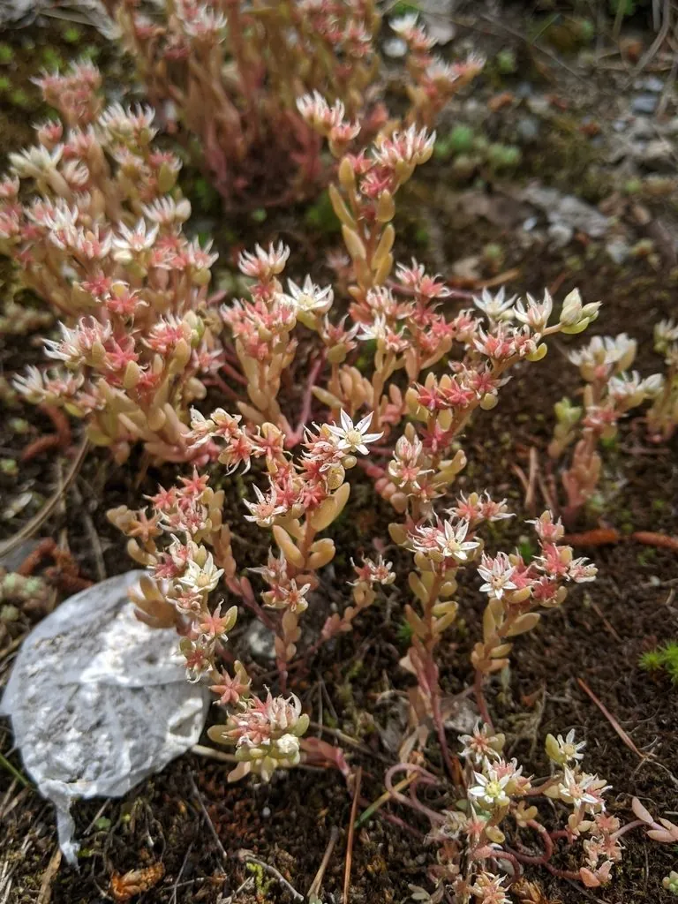

多肉植物 · 植物界
薄雪万年草 Sedum hispanicum

景天科景天属多年生肉质草本，叶片蓝绿色、细如米粒，密生成垫状，秋冬叶尖泛红，是优良的多肉地被植物。
- 分类
- 门被子植物门纲木兰纲目虎耳草目科景天科属景天属
- 栖息环境
- 地中海沿岸的干燥坡地与岩石缝隙，喜光、耐旱、耐寒
- 地理分布
- 原产西班牙及地中海沿岸；中国各地广泛盆栽栽培
- 保护级别
- IUCN 暂无评估；栽培普遍，野生种群稳定
物种志
薄雪万年草为多年生肉质草本，高 5–10 厘米，茎细长、匍匐或斜升，易群生成垫状。叶片细小，长 3–6 毫米，长圆形，蓝绿色至灰绿色，表面被白粉，密集排列在茎上，秋冬低温时叶尖转红。花小，白色，星形，春季开放。
本种原产西班牙及地中海沿岸，喜阳光充足、通风良好、干燥的环境，耐旱、耐寒，是优良的多肉地被与屋顶绿化植物。它叶片细密、颜色清冷，成片生长时像一层薄薄的积雪，因此得名“薄雪万年草”。夏季高温时需适当遮阴控水，避免闷热腐烂；冬季可耐短期低温。繁殖以扦插为主，剪取茎段撒在土面即可生根。它也是多肉拼盘中常用的“铺底”材料。
形态与习性
- 株高5–10 厘米，茎匍匐群生
- 叶片细小，长 3–6 毫米，蓝绿色
- 花期春季，花小、白色
- 光照喜光，夏季适当遮阴
- 水分耐旱，怕湿热，干透浇透
- 土壤疏松透气的颗粒土
- 主要用途多肉地被、屋顶绿化与盆栽铺面
趣味知识
- 薄雪万年草的叶片只有几毫米长，成片生长时像一层薄薄的积雪。
- 秋冬低温与充足光照会让它的叶尖泛红，整片呈现粉蓝渐变。
- 它原产地中海沿岸，耐寒性比多数多肉强，可露地越冬。
- 剪下的茎段撒在土面就能生根，是繁殖最快的多肉地被之一。